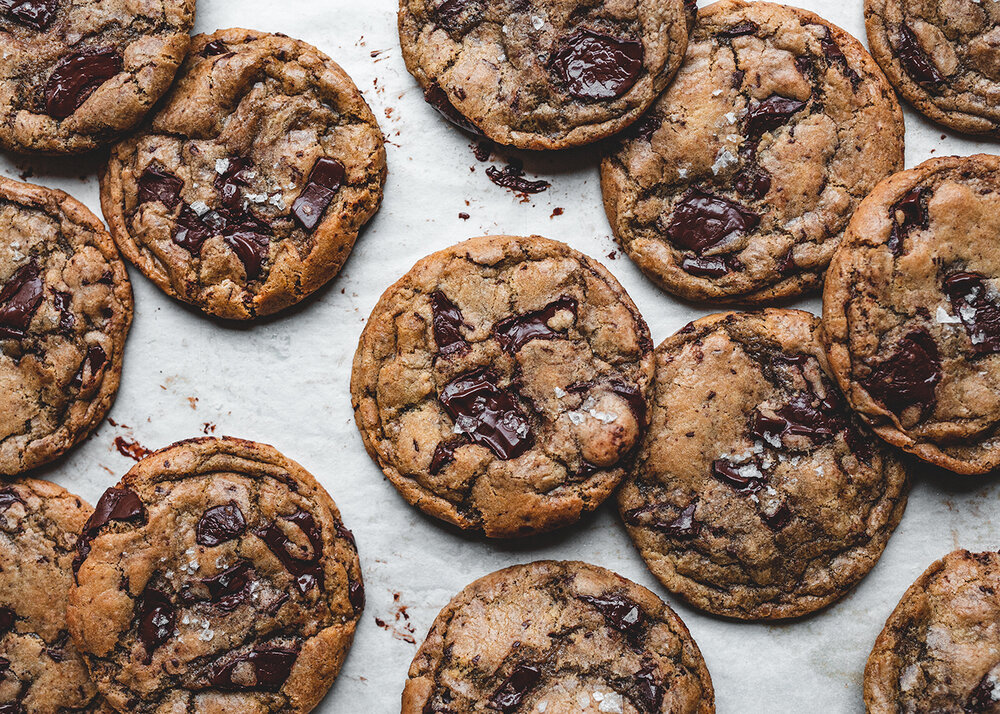

Cookies

Making cookies has many advantages beyond the satisfaction of indulging in a sweet treat.
For one, baking cookies can be a fun and engaging activity, especially when shared with loved ones.
Additionally, cookies can be easily customized to personal preferences by adding ingredients like chocolate chips, nuts, or dried fruit.
INGREDIENTS
- 1/2 cups all-purpose flour
- 1 teaspoon baking soda
- 1 teaspoon salt
- 1 cup unsalted butter, at room temperature
- 3/4 cup white granulated sugar
- 3/4 cup brown sugar, packed
- 2 large eggs
- 1 teaspoon vanilla extract
- 2 cups semisweet chocolate chips
- Optional: chopped nuts or dried fruit
INSTRUCTIONS
- Preheat oven to 375°F (190°C) and line a baking sheet with parchment paper.
- In a medium bowl, whisk together the flour, baking soda, and salt.
- In a large mixing bowl, use an electric mixer to cream together the butter, white sugar, and brown sugar until light and fluffy.
- Beat in the eggs one at a time, then add the vanilla extract and mix until combined.
- Gradually add the flour mixture to the butter mixture and mix until just combined.
- Stir in the chocolate chips (and any optional nuts or dried fruit).
- Scoop the dough by rounded tablespoons onto the prepared baking sheet, spacing them about 2 inches apart.
- Bake for 10-12 minutes, or until the edges are golden brown and the centers are set.
- Remove from the oven and let cool on the baking sheet for 5 minutes, then transfer the cookies to a wire rack to cool completely.
- Serve and enjoy!
Home Page